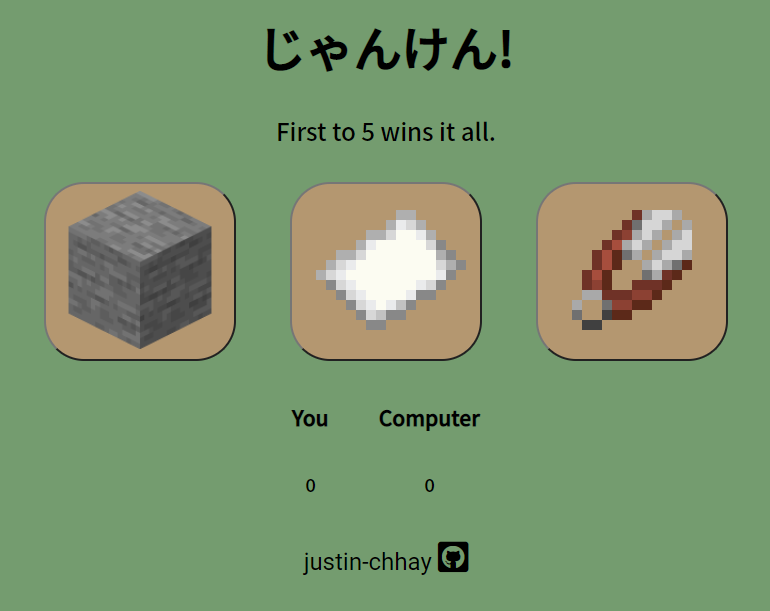

Hello there! I'm a 2B
Computer Engineering
student here at the University of Waterloo. I enjoy fingerstyle guitar,
programming, and anything to do with the great outdoors. For any inquiries click here!
About Me
“Do what you can with all you have, wherever you are.” – Theodore
Roosevelt
Welcome to my website! I'm Justin Chhay, a 2B Computer Engineering student at Waterloo. I created this
website to showcase my skills and interests, all in a byte-sized format. I am interested in fingerstyle
guitar, anime, photography, camping, and everything to do with the outdoors. I am also interested in programming things for
fun!
I customized a template by HTML5Up, with hopes of later on creating my own
website from scratch (using React). By the way since you're here, why not check out
what I've been working on?
Website Version 1.1.7
Projects
They say the best (and most fun) way to learn languages and
technologies is through side projects. So here are some of mine!
Covid-19 Statistics Discord Bot
A Python Discord bot that displays real-time Coronavirus statistics
for any country specified in commands. Data taken from Open Disease Data API (sourced by Worldometers).
Python3Discord.pyOpen Disease Data API
RPS Arcade Website

A simple website recreating the classic game "Rock, Paper, Scissors" which plays up
to 5 rounds versus a computer. I designed and developed the front-end with HTML and CSS. As for the
game logic and alert system, I used JavaScript.
Another Python Discord bot that displays information from the free NASA API. Currently working on adding in more commands, besides the photo of the day.
Python3Discord.pyOpen NASA API
Guitar Covers
Here are some songs that I have been practicing on my acoustic guitar! The art of fingerstyle guitar incorporates both the bass and lead notes behind a
song, heavily utilizing unique acoustic techniques such as thumb slaps, wrist bumps, harmonics. These help simulate other instruments (drums, bass).